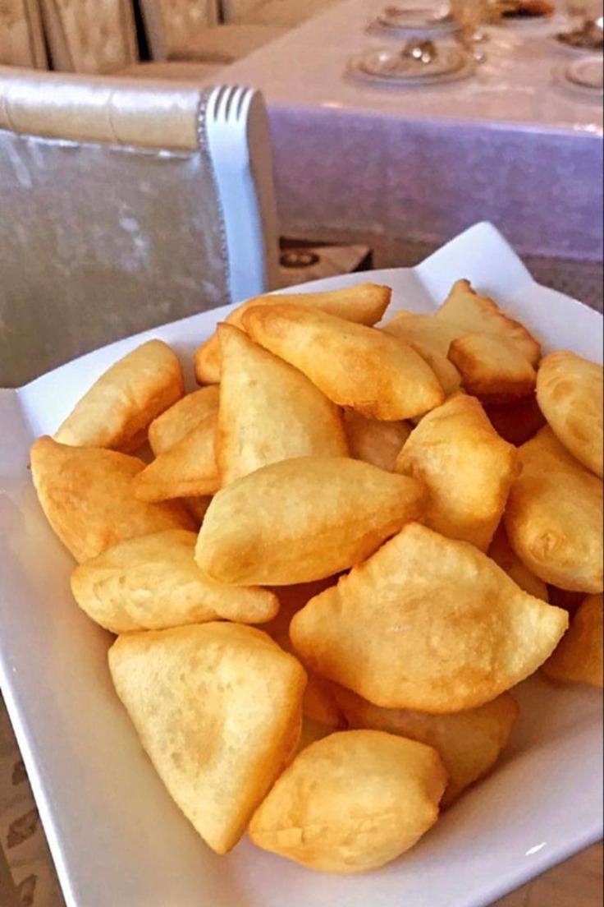
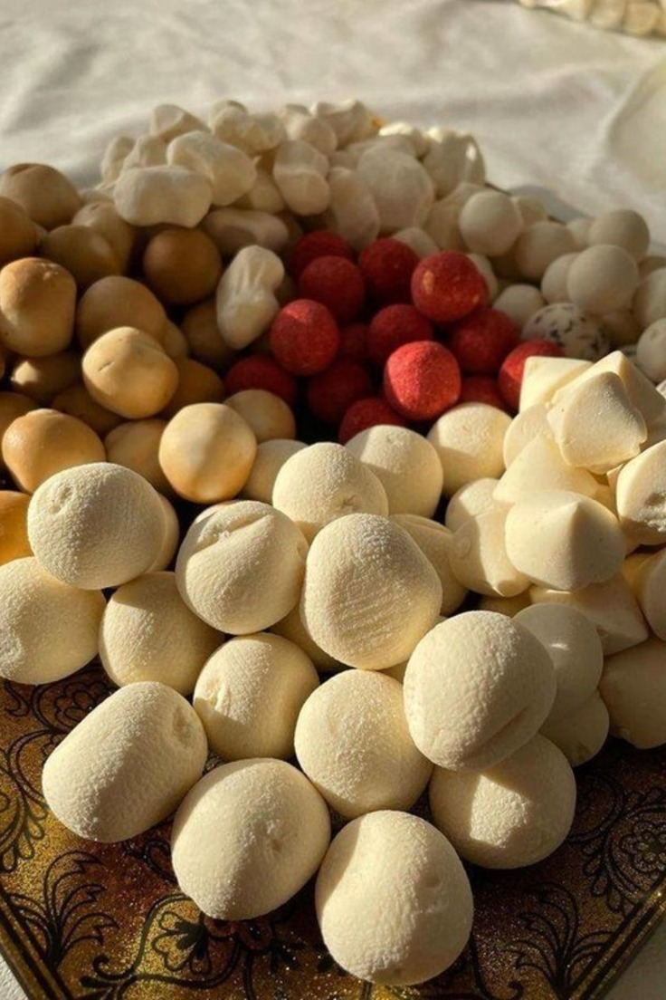

Our national cuisine

Qymyz
Fermented dairy product traditionally made from mare milk or donkey milk

Baursaq
Delicious puffy fried bread

Besbarmaq
Finely chopped boiled meat, mixed with dough (typically egg noodles) and chyk, an onion sauce

Qurt
Drying fermented milk